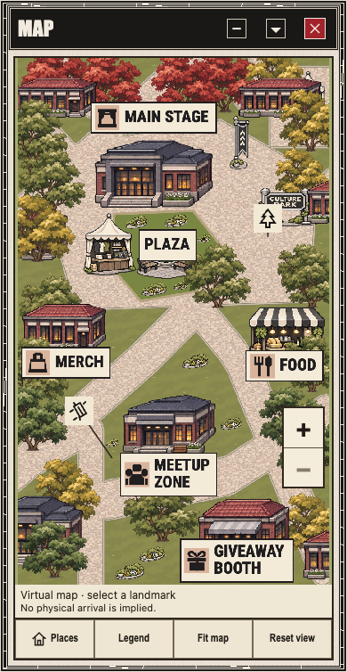
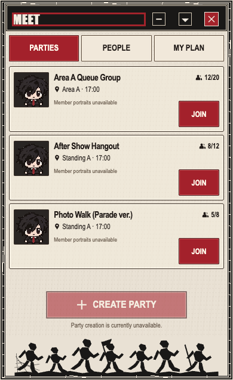
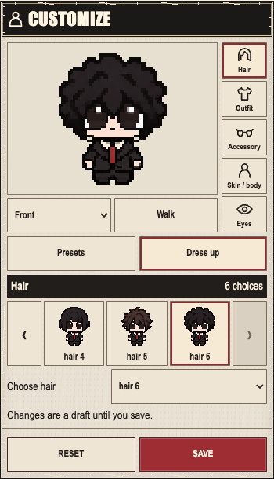

mapUnchanged supplied referenceActual published source fixture; all six labels clear of caption/zoom
meetUnchanged supplied referenceActual published Meet; same three rows; capability unavailable preserved
customizeUnchanged supplied referenceActual pinned component only; no public Root/device/admission inference